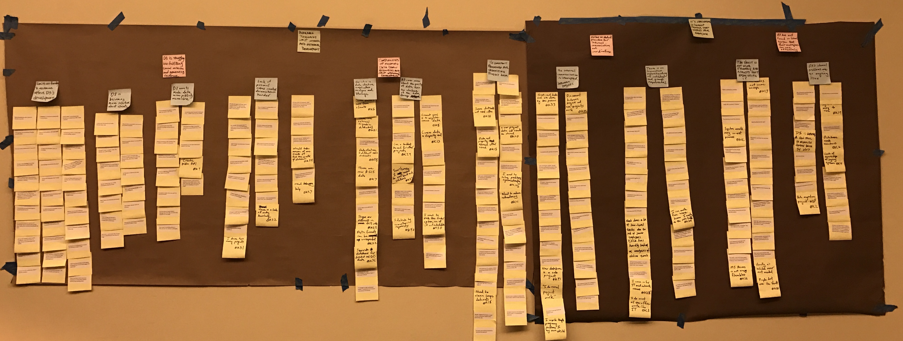

Data Driven Detroit (D3) is a low-profit LLC whose aim is to provide data analysis services to public institutions in the southeast Michigan, with the focus on Detroit, to help public leaders make better, evidence driven decisions. D3 aims to cover the gamut of data analysis services for the public sector—they provide a wide range of data services including data collection, visualization, and interpretation. Many of their projects are initiated through partnerships with other local nonprofits who use D3’s data to advance their own missions. In addition to the D3’s nonprofit projects, they also aim to provide the greater Michigan community with better data and make much of their collected data openly available for public view and use.
D3 proposed the question of how they they should should impove their the design of their internal database to our Contextual Inquiry class. I worked in a group with 3 other students to form a consulting group to begin helping them with the proposed problem.
We began our consulting with D3 by researching into some of the specifics of their field. We then used what we learned to form interview protocols which we used to conduct five interviews with senior employees at D3. Based on what we learned from those interviews, our group came together synthesize an affinity wall in order to idenitify the higher-level challenges which D3 faces in their database design process.
After synthesizing issues which D3 faces, our group delivered a comprehensive consulting report documenting and included both actionable short-term and long-term recommendations. We presented our findings to D3. The head of the organization was pleased with the recommendations informed us that they were in process of implementing some of our recommendations.
A full copy of the consulting report can be obtained upon request «« Back Home